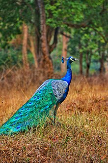
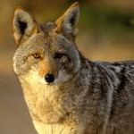
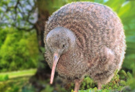

Jane Doe
Facts about Peafowls
- Males are called Peacocks, the females are called peahens
- Peafowls sleep in trees and are found in lowland forests
- Peafowls huge tails are called trains
Gary The Coyote
Facts about Coyote's
When prey is hard to find Coyotes will eat wild berries and fruits
young are born blind in an underground burrow
Kongo The Kiwi
Facts about Kiwi's
Kiwis are flightless
Kiwis are the smallest of the flightless birds
Kiwis are nocturnal because of predators